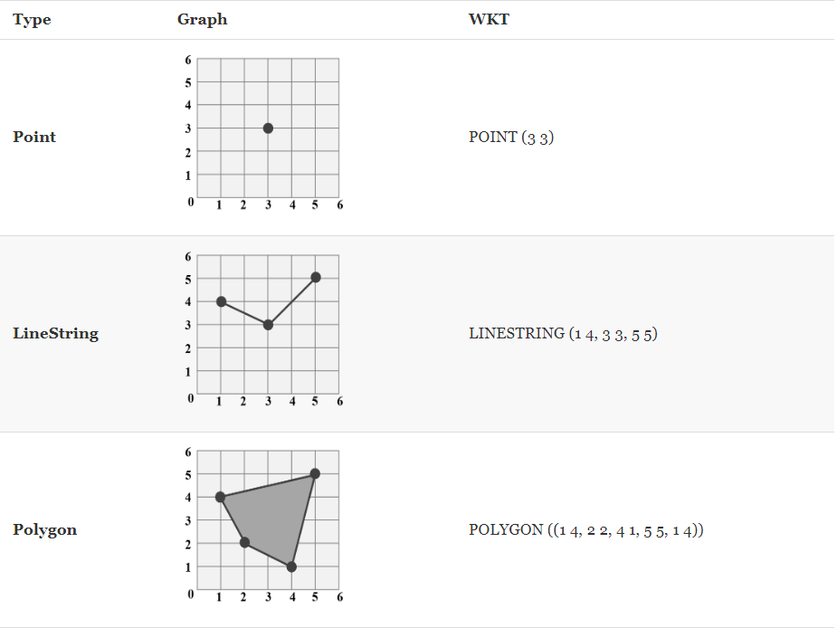
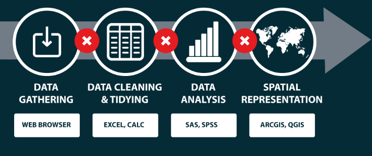
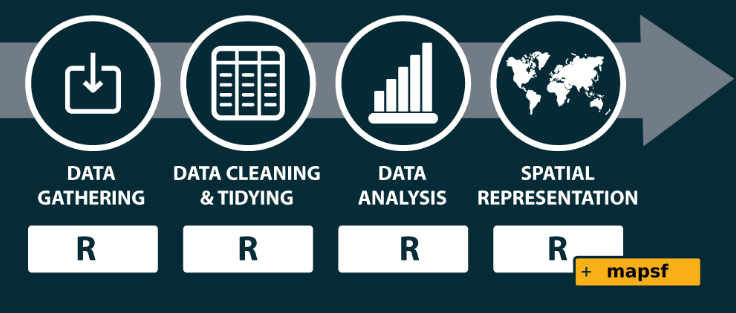
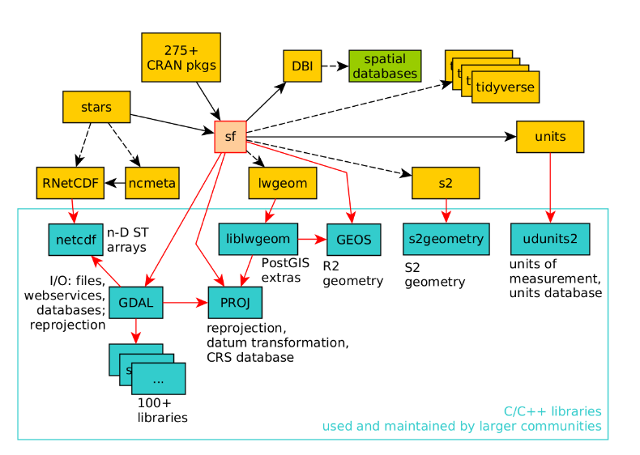
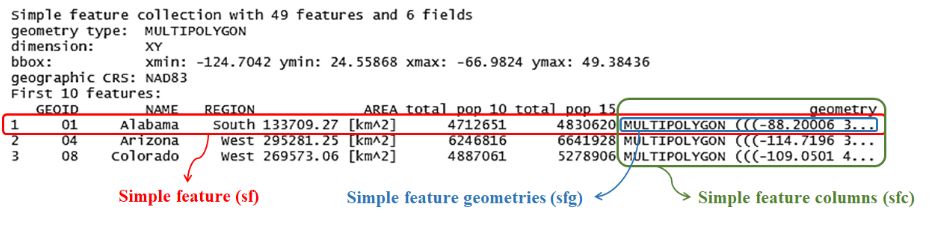

[1] "%>%" "as_Spatial"
[3] "dbDataType" "dbWriteTable"
[5] "gdal_addo" "gdal_create"
[7] "gdal_crs" "gdal_extract"
[9] "gdal_inv_geotransform" "gdal_metadata"
[11] "gdal_polygonize" "gdal_rasterize"
[13] "gdal_read" "gdal_read_mdim"
[15] "gdal_subdatasets" "gdal_utils"
[17] "gdal_write" "gdal_write_mdim"
[19] "get_key_pos" "NA_agr_"
[21] "NA_bbox_" "NA_crs_"
[23] "NA_m_range_" "NA_z_range_"
[25] "pivot_wider.sf" "plot_sf"
[27] "rawToHex" "read_sf"
[29] "sf.colors" "sf_add_proj_units"
[31] "sf_extSoftVersion" "sf_proj_info"
[33] "sf_proj_network" "sf_proj_pipelines"
[35] "sf_proj_search_paths" "sf_project"
[37] "sf_use_s2" "st_agr"
[39] "st_agr<-" "st_area"
[41] "st_as_binary" "st_as_grob"
[43] "st_as_s2" "st_as_sf"
[45] "st_as_sfc" "st_as_text"
[47] "st_axis_order" "st_bbox"
[49] "st_bind_cols" "st_boundary"
[51] "st_break_antimeridian" "st_buffer"
[53] "st_can_transform" "st_cast"
[55] "st_centroid" "st_collection_extract"
[57] "st_combine" "st_concave_hull"
[59] "st_contains" "st_contains_properly"
[61] "st_convex_hull" "st_coordinates"
[63] "st_covered_by" "st_covers"
[65] "st_crop" "st_crosses"
[67] "st_crs" "st_crs<-"
[69] "st_delete" "st_difference"
[71] "st_dimension" "st_disjoint"
[73] "st_distance" "st_drivers"
[75] "st_drop_geometry" "st_equals"
[77] "st_equals_exact" "st_filter"
[79] "st_geometry" "st_geometry_type"
[81] "st_geometry<-" "st_geometrycollection"
[83] "st_graticule" "st_inscribed_circle"
[85] "st_interpolate_aw" "st_intersection"
[87] "st_intersects" "st_is"
[89] "st_is_empty" "st_is_longlat"
[91] "st_is_simple" "st_is_valid"
[93] "st_is_within_distance" "st_jitter"
[95] "st_join" "st_layers"
[97] "st_length" "st_line_merge"
[99] "st_line_sample" "st_linestring"
[101] "st_m_range" "st_make_grid"
[103] "st_make_valid" "st_minimum_rotated_rectangle"
[105] "st_multilinestring" "st_multipoint"
[107] "st_multipolygon" "st_nearest_feature"
[109] "st_nearest_points" "st_node"
[111] "st_normalize" "st_overlaps"
[113] "st_perimeter" "st_point"
[115] "st_point_on_surface" "st_polygon"
[117] "st_polygonize" "st_precision"
[119] "st_precision<-" "st_read"
[121] "st_read_db" "st_relate"
[123] "st_reverse" "st_sample"
[125] "st_segmentize" "st_set_agr"
[127] "st_set_crs" "st_set_geometry"
[129] "st_set_precision" "st_sf"
[131] "st_sfc" "st_shift_longitude"
[133] "st_simplify" "st_snap"
[135] "st_sym_difference" "st_touches"
[137] "st_transform" "st_triangulate"
[139] "st_triangulate_constrained" "st_union"
[141] "st_viewport" "st_voronoi"
[143] "st_within" "st_wrap_dateline"
[145] "st_write" "st_write_db"
[147] "st_z_range" "st_zm"
[149] "vec_cast.sfc" "vec_ptype2.sfc"
[151] "write_sf" Mapping in R Webinar
WCA R-EiE WG
Agenda
- Introduction (10 min)
- Aperçu sur le logiciel R (15 min)
- Aperçu des packages de R pour la cartographie (15 min)
- Lecture et manipulation des données spatialisées / géographiques (15 min)
- Création de cartes (statiques, interactives)
– Cartes statiques avec les packages:ggplot2, tmap, mapsf (45 min)
– Cartes interactives avec les packages:Leaflet, tmap, mapview (45 min)
- Session de Questions & Réponses (30 min)
- Conclusion (5 min)
Introduction
Overview on GIS
- GIS
Geographic Information Systems (GIS) store, analyze, and visualize data for geographic positions on Earth’s surface. The four major features of GIS are listed below.
-Create geographic data.
-Manage spatial data in a database.
-Analyze and find patterns.
-Map Visualization.
Introduction
Overview on GIS
- Well-Known Text (WKT)
Well-known text (WKT) is a text markup language for representing vector geometry objects. The common type of geometric objects are marked as shown in the table below.
Introduction
Overview on GIS
- Shapefile
The shapefile format is a universal geospatial vector data format.The shapefile format can illustrate the vector features: points, lines, and polygons.Each file is briefly introduced as the following:
| Files | Features |
|---|---|
| .shp | shape format; the feature geometry |
| .dbf | attribute format; attributes for each shape, stored as two-dimensional table |
| .prj | projection description, using a well-known text representation of coordinate reference systems |
| .shx | shape index format; a positional index of the feature geometry to allow seeking forwards and backwards quickly |
Introduction
Overview on GIS
- Coordinate Reference System (CRS)
-Geometric data is not geospatial unless it is accompanied by CRS information, which allows GIS to display and operate the data accurately.It includes two major components, datum and projection.
-Datum is a model of the shape of the earth. It has angular units (degrees) and defines the starting point (0,0), and hence th coordinate can represent a specific spot on the earth.
-Projection is a mathematical transformation of the angular measurements on a round earth to a flat surface. The units associated with a given projection are usually linear (feet, meters, etc.).
Introduction
Overview on GIS
- Coordinate Reference System (CRS)
| Type | Features | Example |
|---|---|---|
| Geographic Coordinate Systems | A global or spherical coordinate system such as latitude–longitude. | EPSG:4326 (World Geodetic System 1984) |
| Projected Coordinate System | Based on a map projection such as transverse Mercator, Albers equal area, or Robinson, which project the spherical surface onto a two-dimensional coordinate plane. | EPSG:3826 (TWD97 / TM2 zone 121, Taiwan Datum 1997) |
Introduction
The problem for cartographers

Many maps produced in humanitarian context are made with a set of software products that slices the cartographic process.
A solution

Simplify the map making process in an unified workflow thanks to R and its spatial ecosystem !
Aperçu sur le logiciel R (15 min)

R is a popular programming language used for statistical computing and graphical presentation.
R is derived form the S language developed at ATT Bell Laboratories.
R was originally developed for teaching at the University of Auckland, New Zealand, by Ross Ihaka and Robert Gentleman.
-It is a great resource for data analysis, data visualization, data science and machine learning
-It provides many statistical techniques
-It is easy to draw graphs in R,
-It works on different platforms
-RStudio/Posit is an integrated development environment (IDE) for R.
-It has many packages (libraries of functions)
-It is open-source and free
-It has a large community support
Aperçu des packages de R pour la cartographie (15 min)
Spatial operations
before 2003:
spatial,sgeostat,splancs,akima,geoR,spatstat,spdep,maptools.2003:
rgdal(Roger Bivand, Tim Keitt & Barry Rowlingson), interface between R and GDAL and PROJ42005:
sp(Edzer Pebesma & Roger Bivand), classes methods for spatial objects, quickly adopted.2008:
spsurpport inggplot2(Hadley Wickham)2010:
rgeos(Roger Bivand & Colin Rundel), interface between R & GEOS.2010:
raster(Robert J. Hijmans), support for raster data2016:
sf(Edzer Pebesma), supersedessp,rgdal&rgeos2018:
stars(Edzer Pebesma), supersedesraster.2020:
terra(Robert J. Hijmans) also supersedesraster.
Aperçu des packages de R pour la cartographie (15 min)
Thematic mapping
2014:
tmap(Martijn Tennekes)2017:
ggplot2+ggspatial(Dewey Dunnington)2021:
mapsf(T. Giraud) supersedes cartography.
Aperçu des packages de R pour la cartographie (15 min)
Interactive mapping
2015:
leaflet(Joe Cheng et al.), relies on the leaflet javascript library.2015:
mapview(Tim Appelhans et al.), relies on the leaflet package.2018:
mapdeck(David Cooley), relies on Mapbox GL & Deck.gl libraries.
Lecture et manipulation des données spatialisées / géographiques (15 min)
sf, corner stone of the R spatial ecosystem
Interface between R and extensively used libraries in GIS:
- GDAL - Geospatial Data Abstraction Library
- PROJ - Coordinate Transformation Software
- GEOS - Geometry Engine - Open Source

Pebesma and Bivand (2023)
Lecture et manipulation des données spatialisées / géographiques (15 min)
The sf object does not only contain the geometry information, but sets of features with attributes. The basic component of its geometry data is sfg, which is recorded in WKT format.
A simple feature must contain feature attributes and a simple feature geometries (sfg) object, which defines the location of the tuple. The list-column with the simple feature geometries (sfg) for each tuple is then called simple feature columns (sfc).

Geometric checking
st_intersects: touch or overlap
st_disjoint: !intersects
st_touches: touch
st_crosses: cross (do not touch)
st_within: within
st_contains: contains
Geometric operations
st_read/st_write: reads a sf object / writes a sf object,
st_buffer: compute a buffer around this geometry/each geometry
st_transform: transforms data to a new CRS,
st_intersection: intersects sf objects,
st_union: combines several sf objects into one,
st_as_sf: converts to a sf object.
waterfalls_sf = st_as_sf(waterfalls, coords = c(“lon”, “lat”), crs = 4326)
The st_transform() function is used to convert the existing spatial object’s coordinates into another projection. For example, let’s transform our waterfalls_sf object to the Equal Earth projection (EPSG 8857).
waterfalls_sf_trans = st_transform(waterfalls_sf, 8857)
Création de cartes (statiques, interactives)
- Chargement des packages
library(pacman)
pacman::p_load(
readxl, # import/export excel files
tidyverse, # includes ggplot2 and other
rio, # import/export
here, # file locator
stringr, # working with characters
scales, # transform numbers
ggrepel, # smartly-placed labels
gghighlight, # highlight one part of plot
RColorBrewer, # color scales
sf, # simple features for...
tmap, # thematic map for
mapsf, #map.........
leaflet, #leaflet for inter
mapview #mapview......
)
#pdi <- read_excel()
#ner_shp <- read_sf()
#ner_shp_pdi <-ner_shp %>% left_join(pdi,by=c("AdMIN2_pcode"="Iso3"))Création de cartes (statiques, interactives)
Cartes statiques avec les packages:ggplot2, tmap, mapsf (45 min)
- Carte avec ggplot2
- Carte avec tmap
- Carte avec mapsf